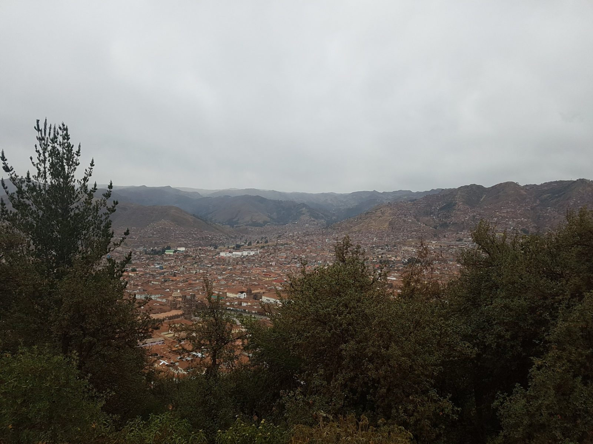
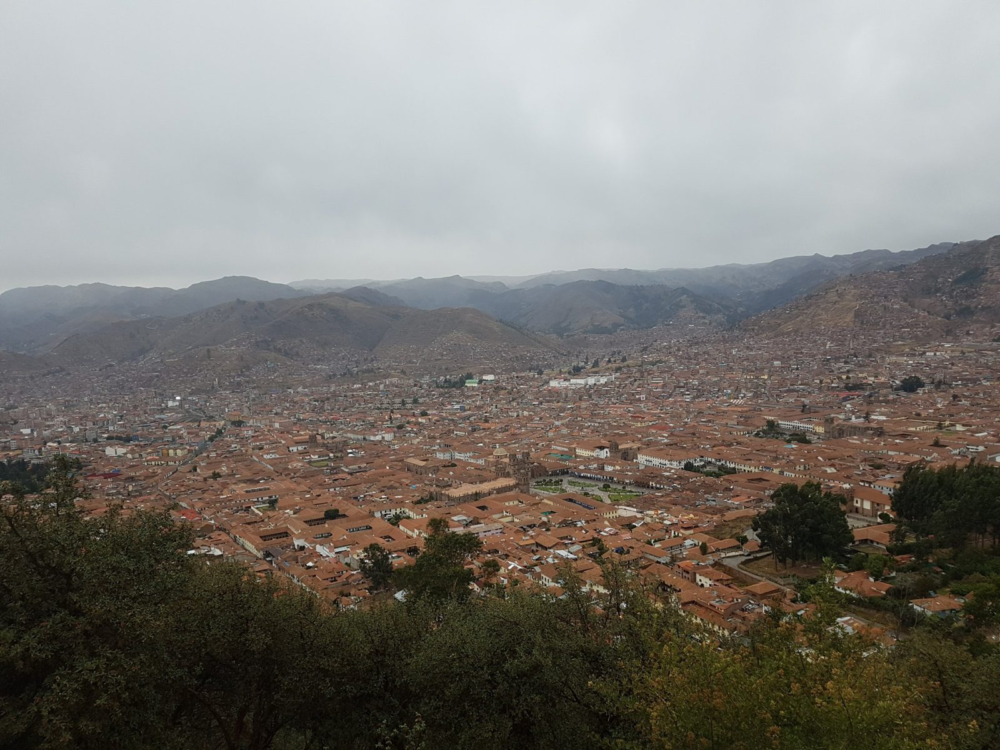
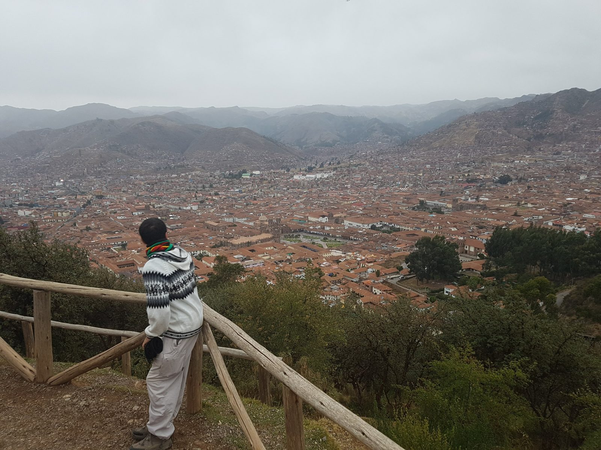
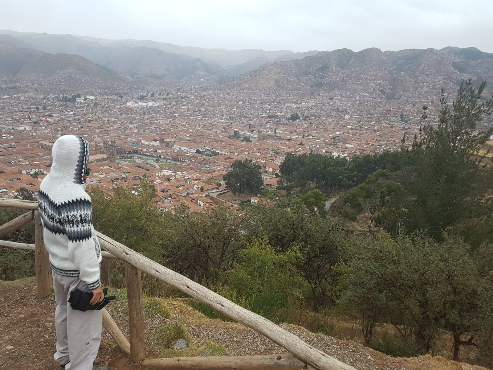
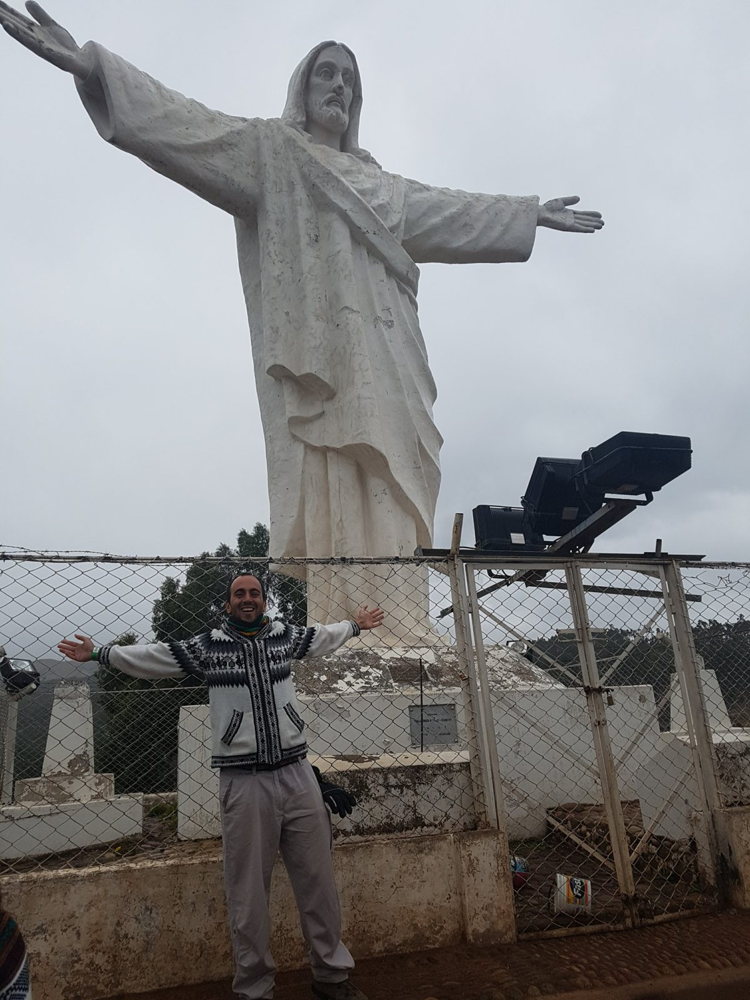
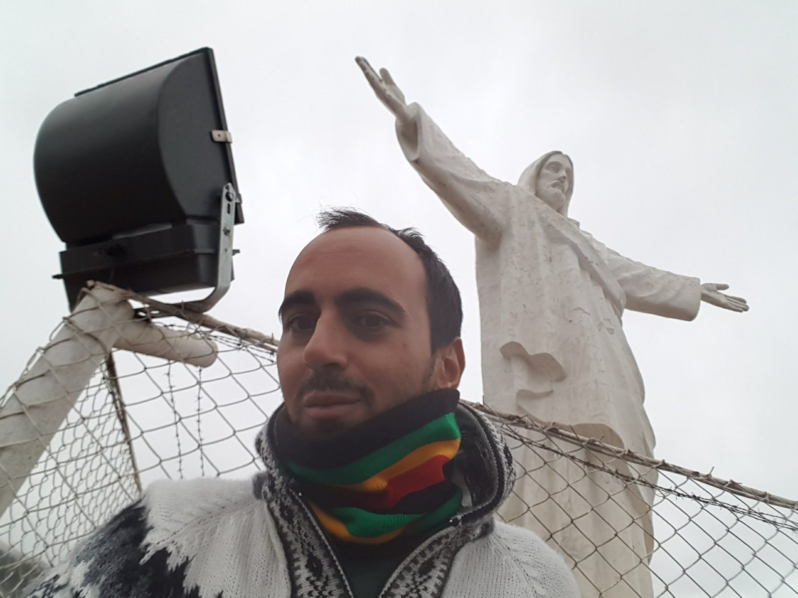
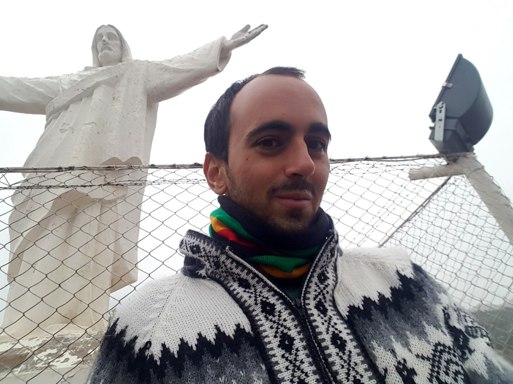

South America · Peru · Cusco
Cristo Blanco, Cusco, October 8, 2017
Two days after Machu Picchu I went up to the viewpoint with the big white statue of Christ above Cusco. This is a short chapter on purpose: it is one stop of about seventeen minutes in my photos, and I did not do anything else that day that I can describe. I went by taxi with friends from the hostel, and there was no entrance fee.
The statue is the one the guides call Cristo Blanco, the White Christ. My own photos are only tagged "Cusco, Peru", so I took the name from the sources listed below, which describe the same statue on the hill above the city.
The city from above
My first photo is at 15:20 and the first video at 15:21. It was a grey, overcast afternoon, which flattens the colours but does not hide the one thing the place is good for: you see the whole red-roofed valley at once, with the central square of the old town in the middle. In the video I pan from the car park and the hills on one side across the city to the other.


At the railing
The next photos are at 15:31. There is a low wooden railing at the edge of the path, and that is where everyone takes the same picture. I did too. The weather was cold enough that I had the hood of my alpaca sweater up.


The statue
From about 15:34 I was by the statue itself. You cannot get close to the base: it stands behind a chain-link fence topped with barbed wire, with large floodlights bolted on beside it. That means the statue is lit at night, and the fence means the pictures are always taken through or in front of it. The white paint was peeling in places when I was there.



This is research, not my experience, except that I went by taxi and paid no entrance fee. A Cusco travel blog, published on May 2, 2023 and updated on November 4, 2025, says the viewpoint is free, that you can visit from very early in the morning until sunset, and that a taxi from the main square costs 15 to 20 soles. It also lists local buses that stop at the same place.
A second tour-operator page, published on February 23, 2023 and modified on August 20, 2026, gives the walk from the main square as about 40 minutes, roughly 2 km, the taxi as about 15 minutes and 15 soles, and again says no entrance fee.
The first page adds that you need the Boleto Turístico to enter the Sacsayhuamán archaeological site, next to the statue. It does not say whether you can reach the viewpoint without it, and I paid nothing at the viewpoint, so check this on the day.
An older guide, last modified on February 28, 2019, says the statue is lit at night and advises taking a taxi that waits for you if you go after dark. I could not find a current source for safety at the site, so treat that as an older tip and not a current fact.
What I would tell a friend
- It is a good short stop, not a destination. Allow time for the view and a few photos, and combine it with the nearby archaeological site if you have a ticket.
- Go with other people. Going up by taxi with friends from the hostel made the trip easy.
- Bring a warm layer. It was cold and grey on the afternoon I went.
- Clear weather would make the view much better. Mine was flat under cloud.
What I do not remember
What the taxi cost, how long we stayed, whether we walked back or took a taxi, and what I did for the rest of the day.
Sources
- Tierra de los Andes, White Christ viewpoint (published May 2, 2023, updated November 4, 2025)
- Machu Picchu Peru Tours, White Christ: a unique viewpoint of Cusco (published February 23, 2023, modified August 20, 2026)
- The Only Peru Guide, Cristo Blanco (last modified February 28, 2019)
Previous: Machu Picchu, October 6.